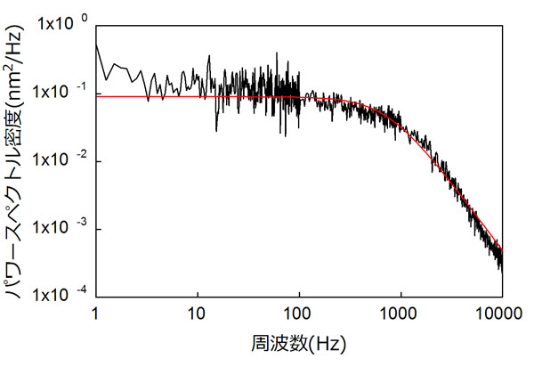
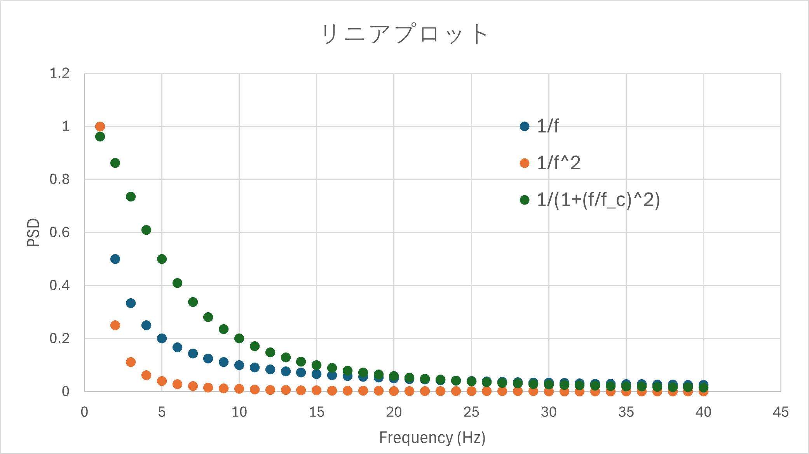
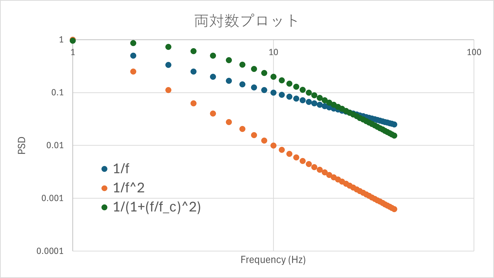

パワースペクトルの実際の作業内容-01
今回は，パワースペクトルの実際の作業について，説明したいと思います．
実際に，"Power Spectrum"，で検索するといろいろな画像がヒットしますが，今回の手法はもしかしたらメインではない手法かもしれません．
実際に私が作った画像は，

というもので，これは1996年の論文（もう30年以上も前！）です．
この特徴は，
両軸とも，対数表示
縦軸が，”パワースペクトル密度(nm2/Hz)
グラフのゆらぎが100Hzで変化している
というものです．
これをそれぞれ考えていきましょう．
・両対数プロット
我々の生活の中では，リニアな現象もありますが，べき乗則に則った現象も多く見られます．
べき乗則は，検索して調べていただくことにして，このような現象は対数表示したほうがわかりやすい場合が多いです．
・周波数（横軸）
もちろん，交流電圧のように50, 60 Hzの違いも大事ですが，広い周波数帯を我々は感知できそうです．
聴覚で言うと，ネットで調べると，20 HZから，20,000 Hz程度まで感じることができるとのことです（私はもう高周波は無理ですが．．．）
音楽でも，ラ(A3)が440Hz，1オクターブ上のラ(AA4)が880 Hzと倍々になっています．
・パワー（縦軸）
これも，よくデシベルという単語をよく耳にしますが，これも対数表示ですね，マグニチュード，もそうです．
ですので，両軸とも対数表示にした方が広い領域を一度に網羅することが可能となります．
・ゆらぎ
ノイズ，雑音，と呼ばれるものにもいろいろな形態があり，
ピンクノイズ（1/fに比例，昔は1/fノイズと言われ，心地よいゆらぎと言われていましたね，家にある扇風機も1/fゆらぎ機能搭載です）
ブラウニアンノイズ（1/f2に比例しているということです）
ローレンツ型ノイズ(1/(1+(f/fc)2に比例)
などあります．これを単純にエクセルでグラフ化（横軸周波数，縦軸はたぶんパワー密度）してみると

となり，どれも右肩下がりのカーブとなり，これら3つを区別することはほとんど不可能に近いですね．
しかし，同じデータを両対数プロットで示すと，

と明らかに傾き，傾くポイントが異なることがわかります．これは，
・ピンクノイズ，1/f
\(\Large \displaystyle y = C_0 \frac{1}{f} \)
とした場合，対数をとると，
\(\Large \displaystyle log(y) = log [C_0 \frac{1}{f}] \)
\(\Large \displaystyle \hspace{36pt} = log (C_0) + log \left(\frac{1}{f} \right) \)
\(\Large \displaystyle \hspace{36pt} = log (C_0) - log (f) \)
と傾きが-1の直線となります．同様に，
・ブラウニアンノイズ，1/f2
\(\Large \displaystyle y = C_0 \frac{1}{f^2} \)
とした場合，対数をとると，
\(\Large \displaystyle log(y) = log [C_0 \frac{1}{f^2}] \)
\(\Large \displaystyle \hspace{36pt} = log (C_0) + log \left(\frac{1}{f^2} \right) \)
\(\Large \displaystyle \hspace{36pt} = log (C_0) - 2 \ log (f) \)
と傾きが-2の直線となります．
・ローレンツ型ノイズ，1/(1+(f/fc)2
これは，ちょっとややこしいですが，
\(\Large \displaystyle \Phi = \frac{ \Phi_0}{1+ \left( \frac{f}{f_c} \right) ^2} \)
でローレンツ型ゆらぎは表記できますが，二つの場合に分けて
・f << fc，の場合，分母が１となりますので，
\(\Large \displaystyle \Phi \fallingdotseq \Phi_0 \)
と一定の値となります．
・f >> fc，の場合，分母の１が無視できるので，
\(\Large \displaystyle \Phi \fallingdotseq \frac{ \Phi_0}{ \left( \frac{f}{f_c}\right) ^2} = \frac{ \Phi_0 \ f_c^2}{ f ^2}\)
となり，
低周波域では一定
高周波域では2乗に反比例して減少（両対数の場合，-2の傾きの直線）
となるわけです．
このように，両対数プロットを採用すると，
広域のデータを一覧できる
ゆらぎの種類を区別しやすくなる
というメリットがあります．
と，両対数プロットはいいことづくめ，のように思えますが，いろいろと問題もあるのです．